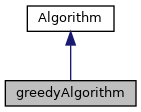
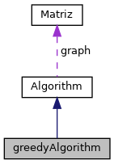
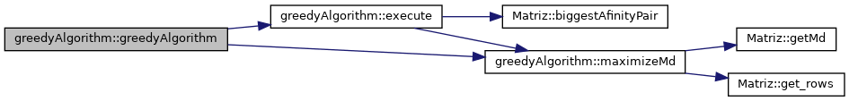
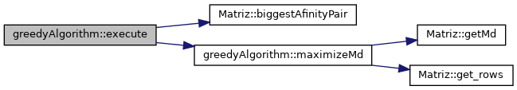
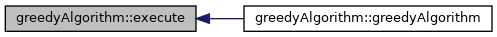
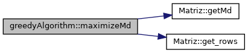
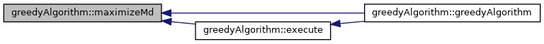

Implementation of the greedy algorithm to solve Max Mean problem. More...
#include <greedyAlgorithm.hpp>
Inheritance diagram for greedyAlgorithm:

Collaboration diagram for greedyAlgorithm:

Public Member Functions | |
| greedyAlgorithm (std::string filename) | |
| Construct a new greedy Algorithm object. More... | |
| std::vector< int > | execute () |
| Method that executes the algorithm. More... | |
| std::pair< int, bool > | maximizeMd (std::vector< int > solution) |
| Returns the node with the max mean dispersion. More... | |
 Public Member Functions inherited from Algorithm Public Member Functions inherited from Algorithm | |
| Algorithm (std::string filename) | |
| Construct a new Algorithm object. More... | |
Additional Inherited Members | |
| Protected Attributes inherited from Algorithm | |
| Matriz | graph |
Detailed Description
Implementation of the greedy algorithm to solve Max Mean problem.
Constructor & Destructor Documentation
◆ greedyAlgorithm()
|
inline |
Construct a new greedy Algorithm object.
- Parameters
-
filename
Algorithm(std::string filename)
Construct a new Algorithm object.
Definition: algorithm.hpp:35
Here is the call graph for this function:

Member Function Documentation
◆ execute()
|
virtual |
Method that executes the algorithm.
- Returns
- std::vector<int>
Implements Algorithm.
std::pair< int, int > biggestAfinityPair()
returns a pair with the two nodes with the highest afinity
Definition: matrix.cpp:57
std::pair< int, bool > maximizeMd(std::vector< int > solution)
Returns the node with the max mean dispersion.
Definition: greedyAlgorithm.cpp:18
Here is the call graph for this function:

Here is the caller graph for this function:

◆ maximizeMd()
| std::pair< int, bool > greedyAlgorithm::maximizeMd | ( | std::vector< int > | solution | ) |
Returns the node with the max mean dispersion.
- Parameters
-
solution
- Returns
- std::pair<int, bool>
float getMd(std::vector< int > solution)
Returns the mean dispersion.
Definition: matrix.cpp:84
Here is the call graph for this function:

Here is the caller graph for this function:

The documentation for this class was generated from the following files:
- include/greedyAlgorithm.hpp
- src/greedyAlgorithm.cpp